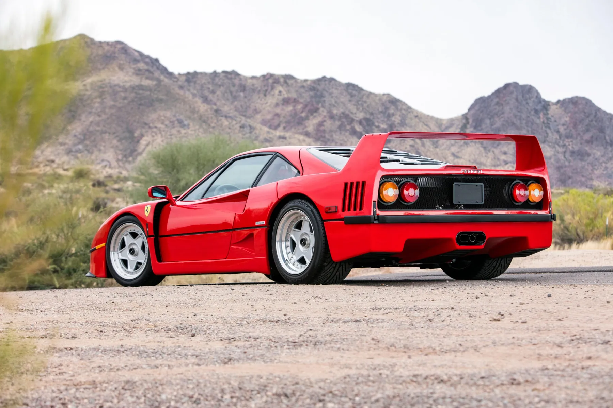
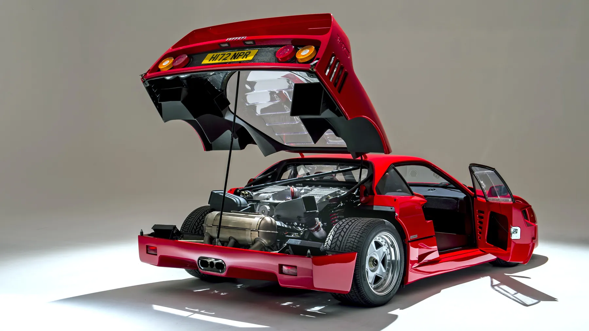
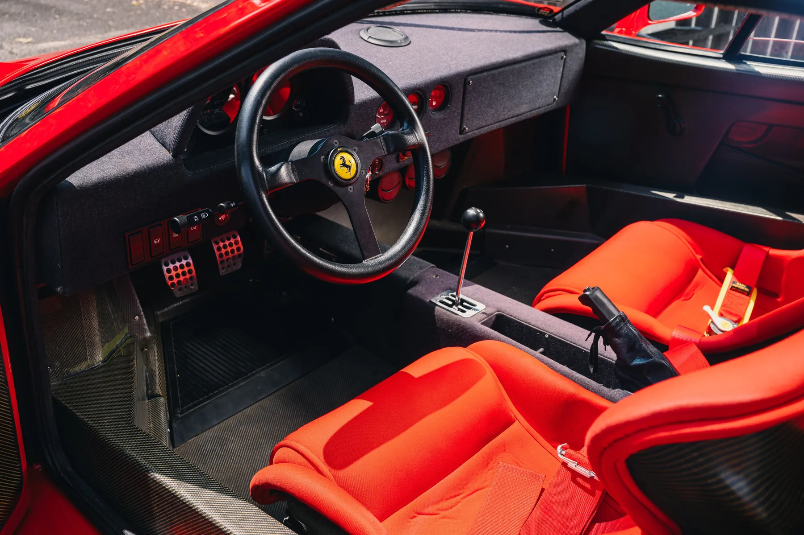
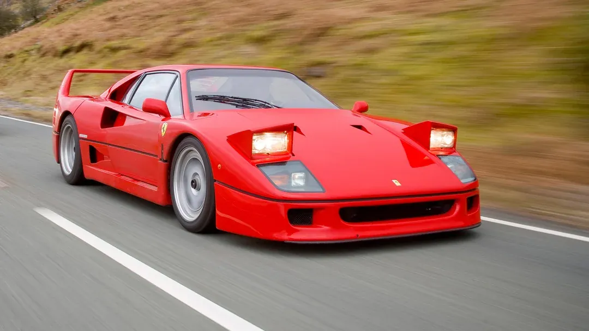

El Ferrari F40The Ferrari F40
El Ferrari F40 se presentó en 1987 para conmemorar el 40.º aniversario de la marca. Concebido como un modelo de producción limitada, fue el último coche aprobado personalmente por Enzo Ferrari antes de su muerte en 1988. Aunque se previeron solo 400 unidades, la enorme demanda llevó a Ferrari a fabricar más de 1.300. Hoy sigue siendo un símbolo de pasión, excelencia técnica y del espíritu puro de la época dorada de Ferrari.
The Ferrari F40 was unveiled in 1987 to commemorate the brand's 40th anniversary. Conceived as a limited-production model, it was the last car personally approved by Enzo Ferrari before his death in 1988. Originally intended as a run of just 400 units, the overwhelming demand led Ferrari to produce over 1,300 cars. Today, it remains a symbol of passion, engineering excellence, and the raw spirit of Ferrari's golden era.
Un diseño radical y funcionalRadical and Purposeful Design

Diseñado por Pininfarina, el F40 tiene una carrocería espectacular y funcional fabricada con materiales ligeros como la fibra de carbono, el kevlar y el aluminio. Su postura ancha, sus agresivas tomas de aire y su enorme alerón trasero no son solo decoración: cada elemento está pensado para mejorar la aerodinámica y la estabilidad a alta velocidad. La forma del F40 fue tan revolucionaria como icónica y marcó nuevos estándares en el diseño de superdeportivos.
Designed by Pininfarina, the F40 features a dramatic and functional body made from lightweight materials like carbon fiber, Kevlar, and aluminum. Its wide stance, aggressive air intakes, and massive rear wing are not just for show — every element is crafted to enhance aerodynamic performance and high-speed stability. The F40's shape was as revolutionary as it was iconic, setting new standards for supercar design.
Motor y prestacionesEngine and Performance

En el corazón del F40 hay un V8 biturbo de 2,9 litros que rinde 478 CV. Con un peso en orden de marcha de poco más de 1.100 kg, acelera de 0 a 100 km/h en solo 4,1 segundos y alcanza una velocidad máxima de 324 km/h. Estas cifras lo convirtieron en el coche de calle más rápido de su época, y aún hoy sus prestaciones siguen emocionando.
At the heart of the F40 lies a twin-turbocharged 2.9-liter V8 engine that produces 478 horsepower. With a curb weight of just over 1,100 kg (2,425 lbs), the car rockets from 0 to 100 km/h (0–62 mph) in just 4.1 seconds and reaches a top speed of 324 km/h (201 mph). These figures made the F40 the fastest road-legal car of its time, and even today, its performance remains exhilarating.
Conducción en estado puroA Pure Driving Experience

El F40 se construyó con un único objetivo: el rendimiento. No tiene ayudas a la conducción modernas como ABS, control de tracción o dirección asistida. El interior es austero, con paneles de carbono a la vista, asientos baquet y un aislamiento mínimo. Este enfoque sin concesiones ofrece una conducción visceral y analógica que exige habilidad y premia la precisión: una conexión auténtica entre conductor y máquina.
The F40 was built with a singular goal: performance. It lacks modern driving aids such as ABS, traction control, or power steering. The interior is stripped down, with bare carbon panels, bucket seats, and minimal insulation. This no-compromise approach delivers a visceral, analog driving experience that demands skill and rewards precision — a true connection between driver and machine.
Un legado duraderoEnduring Legacy

Décadas después de su debut, el Ferrari F40 sigue cautivando a aficionados y coleccionistas de todo el mundo. Su fama como uno de los superdeportivos más crudos, emocionantes y bonitos jamás fabricados no tiene rival. Más allá de sus cifras, el F40 representa una filosofía que une la herencia de la competición con una ingeniería sin concesiones: un legado que todavía define el alma de Ferrari.
Decades after its debut, the Ferrari F40 continues to captivate automotive enthusiasts and collectors worldwide. Its reputation as one of the most raw, engaging, and beautiful supercars ever made is unmatched. Beyond its specs, the F40 represents a philosophy that blends racing heritage with uncompromising engineering — a legacy that still defines Ferrari's soul.